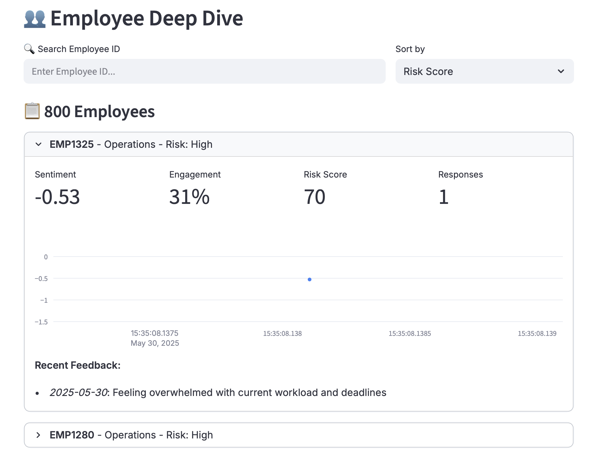

üéØ Enterprise Sentiment Analytics Platform¶
AI-Powered Intelligence Platform for Workforce Engagement & Well-being

üìñ Overview¶
Enterprise Sentiment Analytics is a comprehensive, production-ready platform designed to help HR teams and organizational leaders gain deep insights into employee sentiment, engagement, and well-being. Leveraging advanced natural language processing and predictive analytics, this platform transforms employee feedback into actionable intelligence.
üé• Demo¶
Live Demo: Try it now



✨ Features¶
üìä Executive Dashboard¶
- Real-time Metrics: Track sentiment score, engagement, NPS, and attrition risk
- Trend Visualization: Interactive time-series charts with confidence intervals
- Department Analytics: Compare performance across teams and locations
- Risk Assessment: Identify high-risk employees before they leave
- Response Tracking: Monitor participation rates and feedback coverage
üìà Advanced Analytics¶
- Correlation Analysis: Discover relationships between engagement factors
- Multi-dimensional Insights: Scatter plots and heat maps
- Time Series Deep Dive: Historical trends with statistical analysis
- Keyword Mining: Automatic topic extraction from feedback
- Cohort Analysis: Segment by tenure, role, location, and department
üéØ Pulse Surveys¶
- Quick Check-ins: 2-minute employee pulse surveys
- 5 Core Dimensions: Satisfaction, balance, recognition, workload, growth
- Anonymous Options: Encourage honest feedback
- Real-time Results: Instant aggregation and visualization
- Survey History: Track pulse trends over time
üí° AI-Powered Insights¶
- Automated Trend Detection: Machine learning identifies patterns
- Smart Recommendations: Prioritized action items with timelines
- Predictive Analytics: Forecast turnover and sentiment trajectories
- Theme Analysis: Identify top concerns across feedback
- Engagement Index: Composite scoring across multiple factors
üë• Employee Deep Dive¶
- Individual Profiles: Track sentiment history per employee
- Risk Scoring: Multi-factor attrition risk assessment
- Search & Filter: Find employees by ID, department, or risk level
- Feedback Timeline: Chronological view of all responses
- Personalized Insights: Tailored recommendations per employee
‚öôÔ∏è Data Management¶
- Flexible Import: Support for CSV and Excel formats
- Template System: Pre-built templates for easy data formatting
- Data Quality Metrics: Completeness, recency, and coverage tracking
- Export Capabilities: Download filtered data and comprehensive reports
- Privacy Controls: Anonymization and data retention settings
üõ†Ô∏è Tech Stack¶
Core Framework¶
- Streamlit
v1.32.0- Interactive web application framework - Python
v3.8+- Primary programming language
Data Processing & Analysis¶
- Pandas
v2.2.0- Data manipulation and analysis - NumPy
v1.26.4- Numerical computing and array operations - OpenPyXL
v3.1.2- Excel file handling
Natural Language Processing¶
- TextBlob
v0.18.0- Sentiment analysis and NLP - NLTK - Natural language toolkit (TextBlob dependency)
Data Visualization¶
- Plotly
v5.19.0- Interactive charts and graphs - Line charts with confidence intervals
- Scatter plots with bubble sizing
- Heat maps for correlation analysis
- Radar charts for multi-dimensional metrics
- Pie charts and donut charts
- Horizontal and vertical bar charts
Additional Libraries¶
- datetime - Date and time manipulation
- collections.Counter - Frequency counting for keyword analysis
- io.BytesIO - In-memory file handling for exports
- json - JSON data serialization
- random - Sample data generation
üíª Usage¶
1. Getting Started¶
Option A: Use Sample Data¶
- Open the application
- Sample data (800+ records) loads automatically
- Explore all features immediately
Option B: Upload Your Data¶
- Navigate to Settings → Upload Data
- Download a template (Feedback, Pulse, or Sentiment)
- Format your data according to template
- Upload CSV or Excel file
- Click "Process & Import"
2. Navigation Guide¶
üìä Dashboard Tab¶
View high-level metrics and trends:
- Overall sentiment score with trend indicator
- Engagement percentage across organization
- Net Promoter Score (NPS)
- High-risk employee count
- Response rate tracking
üìà Analytics Tab¶
Deep dive into data relationships:
- Correlation matrix of engagement factors
- Department vs sentiment scatter plot
- Risk distribution by employee tenure
- Time series analysis with confidence bands
- Topic and keyword frequency analysis
üéØ Pulse Survey Tab¶
Conduct quick employee surveys:
1. Employee enters ID (optional for anonymity)
2. Selects department
3. Rates 5 core dimensions (1-10)
4. Provides optional text feedback
5. Submits and views real-time results
üí° Insights & AI Tab¶
Access AI-powered recommendations:
- Automated trend detection
- Prioritized action items
- Predictive turnover forecasting
- Sentiment trajectory predictions
- Top concern identification
üë• Employee Explorer Tab¶
Individual employee analysis:
- Search by employee ID
- Sort by risk, sentiment, or engagement
- View personal sentiment trends
- Review feedback history
- Export individual reports
‚öôÔ∏è Settings Tab¶
Manage data and configuration:
- Upload custom datasets
- Download data templates
- Export current views
- Configure thresholds
- Set notification preferences
- Manage data retention
üîí Security & Privacy¶
Data Protection¶
- ✅ No data stored on external servers
- ✅ All processing done locally
- ✅ Session-based storage (cleared on exit)
- ✅ Optional employee ID anonymization
- ✅ Configurable data retention policies
Best Practices¶
- Use anonymous surveys for sensitive topics
- Aggregate data before sharing (dept level)
- Restrict access to individual employee data
- Regular data exports with encryption
- Comply with GDPR/privacy regulations
üìÑ License¶
This project is licensed under the MIT License - see the LICENSE file for details.
Made with ❤️ for better workplaces